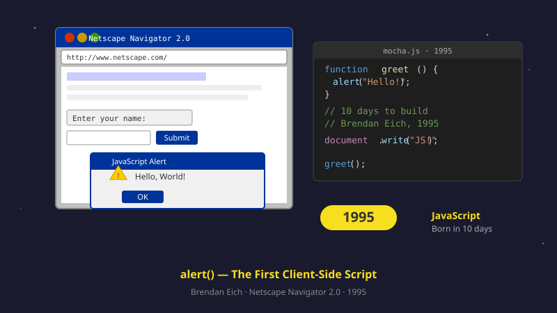

1995
JavaScript, 브라우저에 생기를 불어넣다
“브라우저가 입력을 바로 처리하네?” 넷스케이프에 스크립트 언어가 들어오면서 폼 검증과 인터랙션이 즉시 가능해졌습니다.

1995년까지 웹페이지는 완전히 정적인 종이 같았습니다. HTML로 글과 사진을 보여줄 수만 있었고, 사용자가 뭔가 입력하면 그걸 처리하는 건 무조건 서버 몫이었어요. 회원가입 폼에서 "이메일 형식이 아닙니다"라는 오류를 보려면? 사용자가 제출 버튼을 누르고, 서버로 데이터가 오가고, 서버가 검사하고, 새 페이지가 다시 통째로 그려져야 했습니다. 단순한 검사 한 번이 5초씩 걸렸어요.
넷스케이프의 엔지니어 브렌던 아이크는 이렇게 생각했습니다. "잠깐, 브라우저 안에서 작은 프로그램을 직접 돌릴 수 있게 하면 어떨까? 이메일 형식 검사 같은 간단한 일은 서버까지 갈 필요 없이 즉시 처리하면 되잖아."
그는 단 10일 만에 새 프로그래밍 언어를 만들어 넷스케이프 브라우저에 넣었습니다. 이름은 JavaScript(자바와 이름은 비슷하지만 사실 전혀 다른 언어). 첫 사용자는 환호했어요. "폼에 잘못 입력하면 그 자리에서 즉시 빨간 메시지가 떠요! 페이지를 다시 불러올 필요가 없어요!" 단순한 폼 검증이 시작이었지만, 이게 웹의 미래를 완전히 바꾸게 됩니다.
오늘날 자바스크립트는 전 세계에서 가장 많이 쓰이는 프로그래밍 언어가 됐어요. 페이스북, 인스타그램, 토스, 카카오톡, 네이버, 유튜브 — 여러분이 매일 쓰는 모든 웹사이트가 자바스크립트로 만들어집니다. 한 사람이 10일 만에 만든 임시 언어가 인터넷의 핏줄이 된 거죠. "필요하니까 일단 만들자"는 발상이 30년 후 IT 업계의 표준이 되리라고는 그도 예상하지 못했을 겁니다.
JavaScript는 동적으로 DOM을 조작하고, 이벤트 루프로 사용자 입력을 처리하는 언어로 자리 잡았습니다. 이 사건 이후 브라우저는 단순한 문서 뷰어를 넘어 상호작용 플랫폼이 되기 시작했습니다.